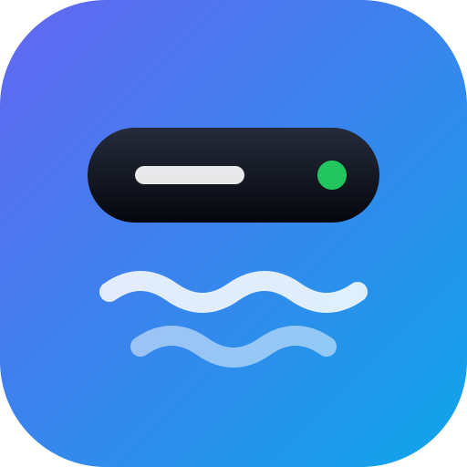

WinIsle
A Dynamic Island-style pill at the top of your Windows screen, with reminders, notifications, media controls, a timer, clipboard history and a file shelf.
Download for WindowsInstall
- Download
WinIsle-Setup.exewith the button above. - Run it. It installs for your account only, so it doesn't ask for administrator rights. Choose whether WinIsle starts with Windows.
- Done. A thin glass line appears at the top centre of the screen. That's the island. Hover it to open the media player.
First steps
- Ctrl+Alt+SOpen the Control Center. Every feature can be turned on or off there.
- Ctrl+Alt+TShow or hide the todo panel.
- Ctrl+Alt+VOpen clipboard history.
- Drag files to the topDrop them on the island to hold them on the shelf.
Notifications permission
To show Windows notifications on the island, WinIsle needs notification access. If Windows asks, allow it. You can check it later in Settings › Privacy & security › Notifications.
Uninstall
Open Settings › Apps › Installed apps, find WinIsle and choose Uninstall. Windows notification banners come back on. Your tasks and settings stay in %LOCALAPPDATA%\WinIsle; delete that folder to remove them too.
Other ways
Portable: download WinIsle.exe and run it from any folder. Nothing is installed.
Build from source: no SDK needed, only the .NET Framework that comes with Windows.
git clone https://github.com/NihapMrm/WinIsle.git
cd WinIsle
build.cmdPrivacy
WinIsle makes no internet connections. Notifications, clipboard history and camera frames stay on your PC. The full details are in the README.